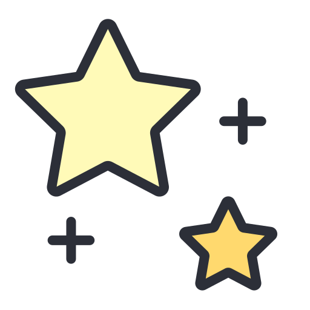

Syndra
Acerca de Syndra, de las guardianas estelares
Temida y admirada, Syndra es una extraordinaria Guardiana Estelar de otra época. Como Janna, su historia está cubierta por las sombras, pero es muy evidente que es una guerrera ambiciosa ágil para desechar a quienes no sean dignos de su tiempo. Actualmente, es consejera en el equipo de Ahri, y los guía lejos de peligros invisibles y hacia un futuro prometedor. A pesar de la confianza que Ahri le brinda, algunos miembros aún se cuestionan los motivos verdaderos de la veterana y sospechan que Syndra haría cualquier cosa por cumplir sus objetivos personales.
Conoce a su Médium mágico: Multi
Una triple manifestación del increíble poder de Syndra, Multi representa un conjunto de emociones. Estos traviesos orbes pían, cacarean y ríen cuando ejecutan la voluntad de la veterana Guardiana. Nunca se apartan demasiado de su lado; ella es el centro de su pequeño universo, y la única que puede balancear su energía.
"¿La diferencia entre tú y yo? Yo sé lo que estoy haciendo."